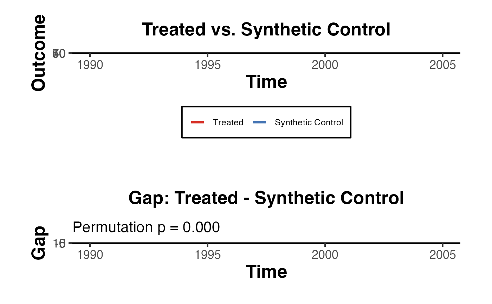

sc_inference_plot.RdReproduces the visual inference approach from Abadie, Diamond & Hainmueller (2010). Placebo gaps (donor unit gaps or permutation draws) are overlaid in grey to provide a null distribution for assessing statistical significance.
sc_inference_plot(
Y_treated,
Y_synthetic,
time_points,
treat_time,
donor_gaps = NULL,
title = NULL,
alpha = 0.05
)Numeric vector. Observed outcome for the treated unit.
Numeric vector. Synthetic control outcome (same length
as Y_treated).
Numeric or integer vector. Time periods (same length as
Y_treated).
Numeric. The first treatment period.
A numeric matrix or data frame where each column is the
gap (actual minus synthetic) for one placebo/donor unit. NULL to omit
placebo overlay and p-value.
Character or NULL. Title prefix for both panels.
Numeric. Significance level for RMSPE-ratio p-value. Default
0.05.
A named list:
plotA patchwork or list of ggplot2 objects (level + gap panels).
p_valuePermutation p-value (fraction of placebos with
post/pre RMSPE ratio >= treated unit ratio). NA if no donors.
rmspe_ratioPost/pre RMSPE ratio for the treated unit.
level_plotggplot2 level panel.
gap_plotggplot2 gap panel.
Synthetic Control Inference Plot (Abadie-Diamond-Hainmueller Style)
Creates the canonical two-panel synthetic control figure: (1) the level plot showing the treated unit against its synthetic control, and (2) the gap plot showing the difference between them, overlaid with donor/placebo gaps in grey. A permutation-based p-value is computed as the fraction of placebos with a post/pre RMSPE ratio at least as large as the treated unit.
Abadie, A., Diamond, A., & Hainmueller, J. (2010). Synthetic control methods for comparative case studies: Estimating the effect of California's tobacco control program. Journal of the American Statistical Association, 105(490), 493-505.
# Simulate treated and synthetic outcomes
set.seed(7)
time_pts <- 1990:2005
treat_t <- 1997
Y_tr <- c(seq(40, 55, length.out = 7),
seq(55, 70, length.out = 9)) + rnorm(16, 0, 1.5)
Y_sc <- c(seq(40, 55, length.out = 7),
seq(55, 59, length.out = 9)) + rnorm(16, 0, 1.5)
# Simulate 10 donor gaps
donor_mat <- matrix(rnorm(16 * 10, 0, 3), nrow = 16)
result <- sc_inference_plot(
Y_treated = Y_tr,
Y_synthetic = Y_sc,
time_points = time_pts,
treat_time = treat_t,
donor_gaps = donor_mat
)
result$plot

result$p_value
#> [1] 0